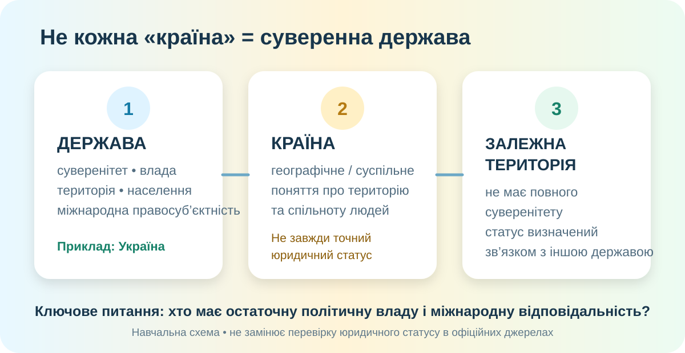

Стартова пастка: «країна» — це завжди держава?
Запишіть початкову гіпотезу. Важливо не вгадати, а назвати критерій, за яким Ви вирішуєте.

1. Розкладаємо поняття без плутанини
Політико-правова система
Суверенна організація публічної влади на певній території з населенням і здатністю діяти у міжнародних відносинах.
Перевірка: хто ухвалює остаточні владні рішення? хто відповідає за зовнішню політику?
Географічне поняття
Територія, яку сприймають як окрему географічну, історичну або суспільну цілісність. Слово зручне, але юридично менш точне.
Пастка: у повсякденній мові «країна» часто = «держава», але не завжди.
Не повний суверенітет
Територія, що має окремий статус, але не здійснює повністю самостійну міжнародну владу; частина ключових повноважень належить іншій державі.
Приклад для перевірки: Гуам — несамоврядна територія під адміністрацією США у переліку ООН.
Джерела для перевірки статусів: ООН — Non-Self-Governing Territories; МЗС Данії — політичний статус Гренландії.
2. Світова карта: статус треба доводити, а не «бачити»
| Об’єкт | Що видно на карті | Що треба перевірити | Висновок |
|---|---|---|---|
| Україна | власна територія й міжнародний кордон | суверенітет, міжнародне визнання | суверенна держава |
| Гренландія | велика окрема територія | хто відповідає за частину зовнішньої політики | автономна частина Королівства Данія |
| Гуам | острів у Тихому океані | адмініструюча держава, статус в ООН | несамоврядна територія під адміністрацією США |
| Гібралтар | маленька територія біля Іспанії | адмініструюча держава | несамоврядна територія під адміністрацією Великої Британії |
3. Практична карта України: кордон — ознака території держави
4. Чому в Азії будують прикордонні мури й огорожі?

Але бар’єр — не «магічна стіна». Він може змінювати маршрути людей і товарів, розривати локальні зв’язки, створювати гуманітарні та екологічні проблеми. Тому оцінюємо не лише «чи захищає», а й якою ціною та від якого ризику.
Фото: Nahid Sultan / Wikimedia Commons, CC BY-SA 4.0. Фактична основа: Ministry of Home Affairs, India — Border Management-I Division.
контроль незаконних перетинів, зброї, контрабанди, насильницьких загроз
спроба контролювати нерегулярне переміщення людей
бар’єр може фіксувати лінію протистояння або демонструвати політичний контроль
5. Мініпрактикум «Хто тут хто?»
Ситуація А
Територія має власний парламент і широкий внутрішній самоврядний статус, але частина ключових міжнародних повноважень пов’язана з іншою державою.
Ситуація Б
Територія має власний уряд, визначений кордон, здійснює самостійну зовнішню політику та вступає у міжнародні договори від свого імені.
Ситуація В
На карті територія підписана окремою назвою і має прапор. Інших відомостей немає.
Ситуація Г
Лінія на карті відділяє дві області однієї держави.
6. Фінальна перевірка — 10 балів
Введіть дані. Кожне завдання — 1 бал. Це коротка перевірка практичної роботи, а не окрема контрольна.
Перевірити одну територію як географ-детектив
Опрацюйте тему про держави, країни та залежні території. Орієнтуйтеся за назвою теми, якщо нумерація параграфів у Вашій електронній версії відрізняється від КТП.
Електронний підручник →Оберіть одну територію зі списку ООН або Гренландію. Напишіть:
C — Claim: який її статус?
E — Evidence: 2 факти з надійного джерела.
R — Reasoning: чому ці факти доводять саме такий статус?
Джерела й перевірка фактів
ООН: 17 несамоврядних територій залишаються у порядку денному деколонізації; Гуам і Гібралтар наведені ООН як несамоврядні території з відповідними адмініструючими державами. МЗС Данії описує Гренландію як автономну частину Королівства Данія з режимом самоврядування. Міністерство внутрішніх справ Індії серед інструментів прикордонного управління називає огорожі, освітлення, дороги, пости й технологічний контроль, а серед завдань — безпеку кордону та протидію незаконним перетинам і контрабанді.
UN — Decolonization · UN — Guam · UN — Gibraltar · Denmark MFA — Greenland · India MHA — Border Management